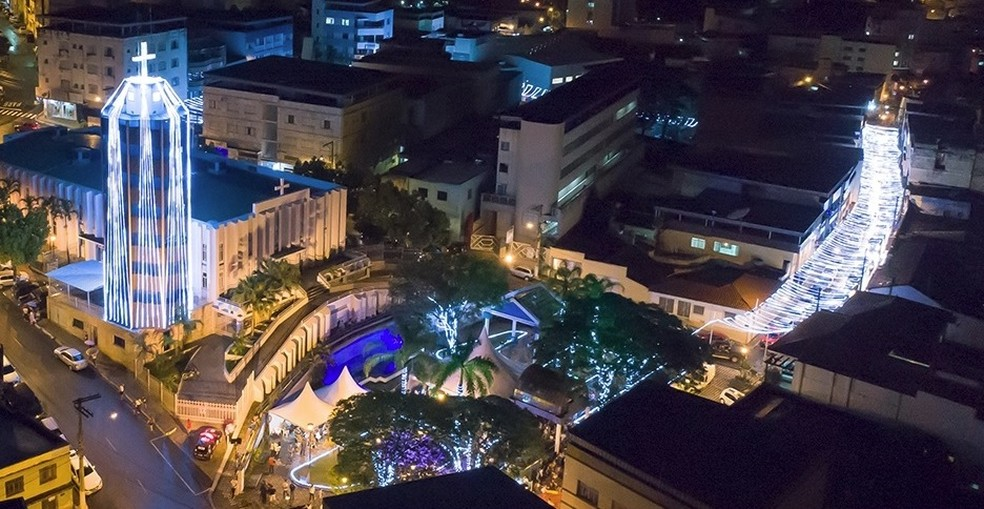

Praça da Matriz
Praça José Batista de Freitas, carinhosamente apelidade de praça da Matriz,
já foi palco de vários eventos legais, como o saudoso Rock na Praça
Que tal relembrar esses momentos de glória da praça e tomar uma cerveja gelada no famoso Bar da
Praça?
Mas só se tiver mais que 18 anos tá? Caso contrário pode ser uma coquinha KS